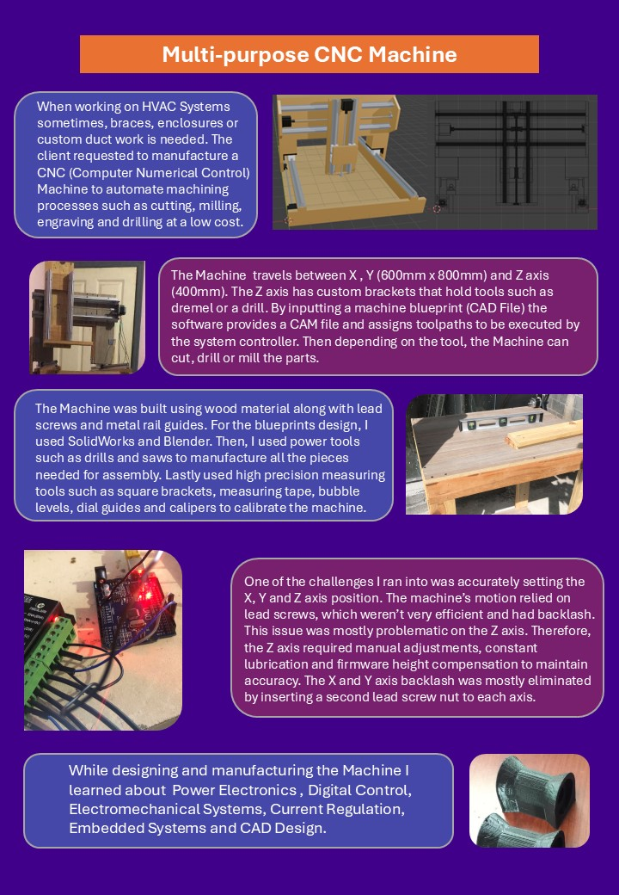
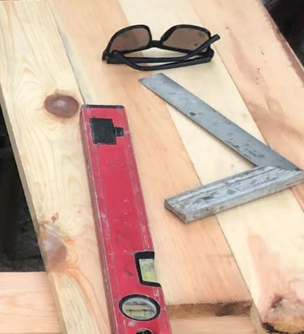
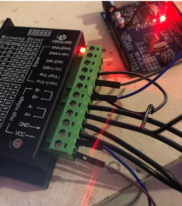
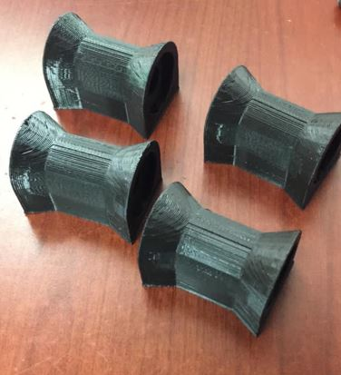

Power tools such as electric drills, saws, and grinders were used, along with measuring instruments to ensure correct construction and alignment.
The assembly process required hands-on work, alignment, and precise fitting.
Tinkering, problem solving and adjustments were made to ensure accurate assembly.


